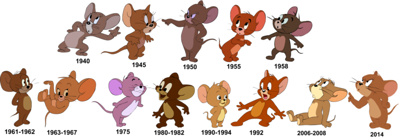

Том i Джеррi
"Том і Джері" (англ. Tom and Jerry) - серія короткометражних мультфільмів, створена американськими аніматорами Вільямом Ханною і Джозефом Барберою.
У сюжетній лінії кожної частини зображено суперництво головних героїв — кота Тома та мишеня Джеррі. Пілотний випуск проекту "Кіт отримує стусан" вийшов на екрани 10 лютого 1940 року. "Том і Джеррі" швидко отримав визнання з боку глядачів і набув популярності у всьому світі.
У 1992 році в кінотеатрах був показаний перший повнометражний мультфільм з однойменною назвою, де головні герої озвучені та розмовляють упродовж усієї стрічки. Пізніше автори вирішили повернутися до стилю перших епізодів, випустивши короткометражні епізоди "Особняк Кота" та "Карате-гвардія". На сьогоднішній день правами на мультсеріал володіє компанія Warner Bros.
Незважаючи на різну критику, мультсеріал зрештою став культовим і за всю історію існування він отримав 7 премій "Оскар" за найкращий анімаційний короткометражний фільм.
Творці мультфільму
Вільям Денбі "Білл" Ханна-англ. William Denby "Bill" Hanna; 14 липня 1910, Мелроуз, Нью-Мексико - 22 березня, Північний Голлівуд, Каліфорнія - американський мультиплікатор, режисер, продюсер і співзасновник, разом з Джозефом Барберою, Hanna-Barbera".
How heroes have changed since 1940 - 2014
Mультфільми
Протягом 80-річної історії франшизи різними студіями було створено загалом 163 короткометражні епізоди про пригоди Тома та Джеррі, а також 5 мультсеріалів та 19 ремейків старих випусків, знятих у форматі "Синемаскоп". Крім того, Вільям Ханна та Джозеф Барбера у 1957 році створили 2 серії мультфільму "Спайк і Тайк", сюжет яких не пов'язаний з "Томом і Джеррі".
Першим повнометражним мультфільмом став фільм Філа Романа "Том і Джеррі", створений компаніями Turner Pictures та Film Roman. Його прем'єра відбулася у жовтні 1992 р. Джозеф Барбера, один із творців серії, консультував аніматорів та пропонував ідеї для сюжету. За сюжетом головні герої збираються переїхати разом зі своїми господарями до нового будинку. У результаті перший повнометражний мультфільм зібрав у США лише 3,5 мільйони доларів касових зборів.
Відгуки та вплив
Пригоди кота Тома і мишеня Джеррі набули світової популярності і запам'яталися глядачам насамперед гарною промальовкою героїв і фонів, сюжетними лініями та музичним супроводом. 7 епізодів було удостоєно премії "Оскар"
Вперше в СРСР "Том і Джеррі" був показаний на Центральному телебаченні у 1970-ті роки. (щоправда, лише кілька серій). Велику популярність на території СРСР та соціалістичних країн "Том і Джеррі" набув у 1980-х — на початку 1990-х років, коли були широко поширені домашні відеомагнітофони та піратські касети. Нерідко переклади були одноголосими (іноді переклад взагалі був відсутній), а якість зображення була від низького до середнього. У 1990-ті роки. у Росії мультфільм також показувався по кабельному телебаченню, каналом ТВ-6, співвласником якого був американський медіамагнат Тед Тернер, а також Cartoon Network
Оригінал статті
- Категорії:
- Мультсеріали США
- "Том і Джеррі"
- Кіномедії
- Випущені відразу на відеоносителях
- Мультфільми
- Випущені відразу на відеоносителях
- Короткометражнi мультфільми США
- Мультсеріали США
Оригінал статті на сайті Big Cartoon DataBase